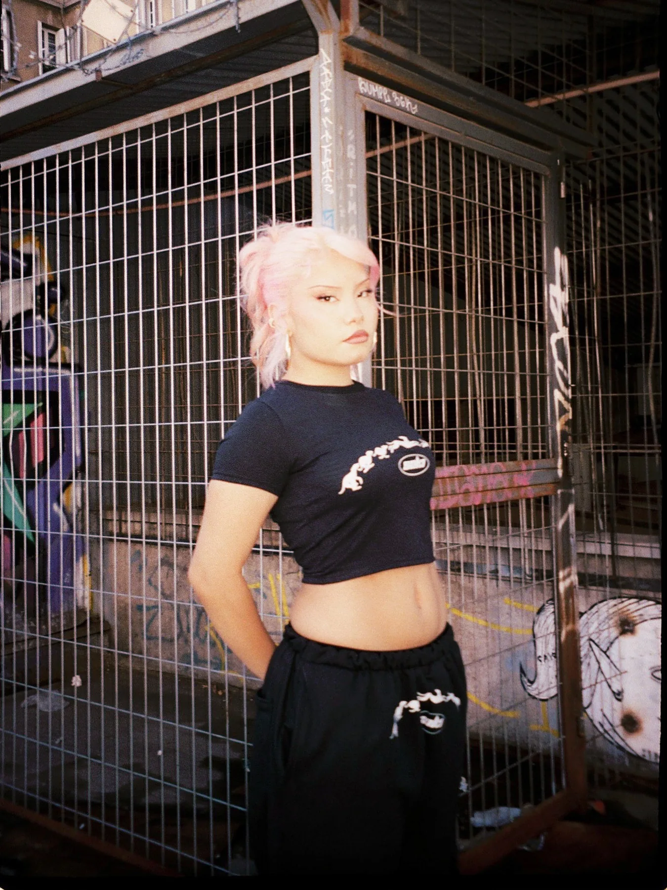
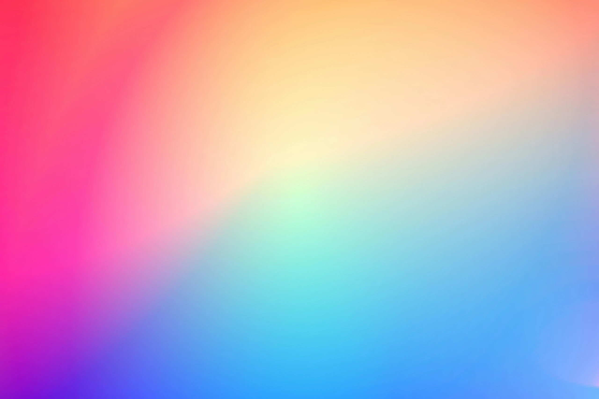
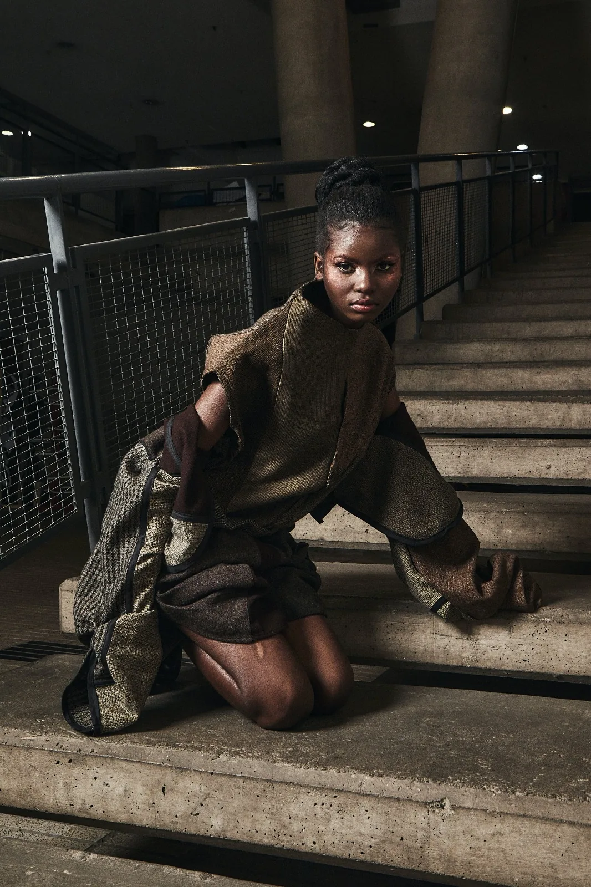
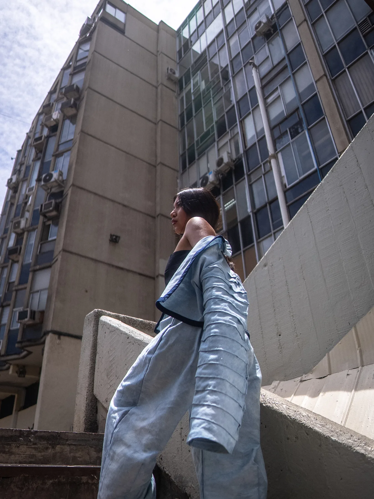
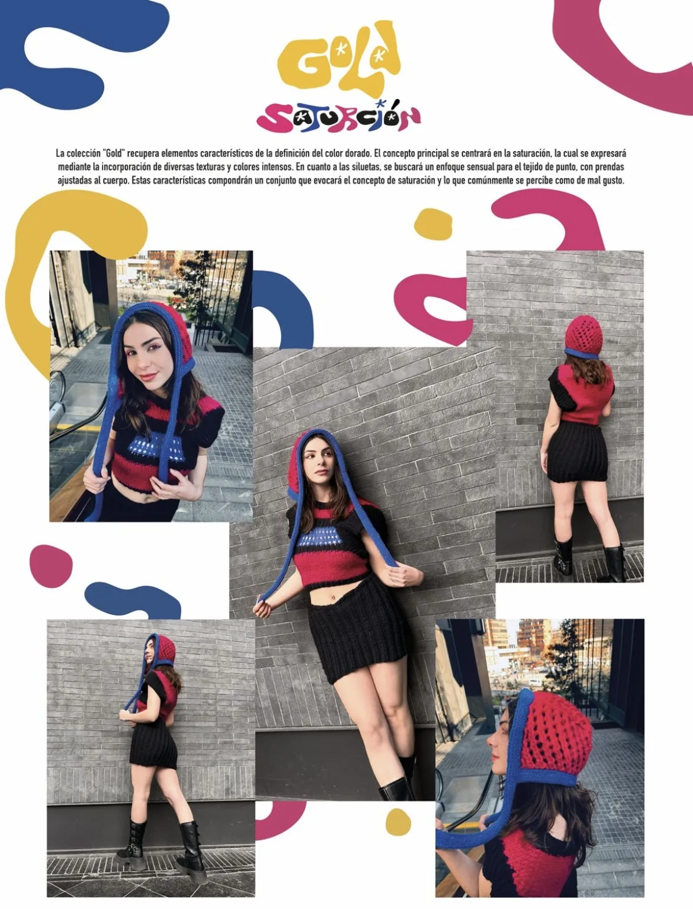
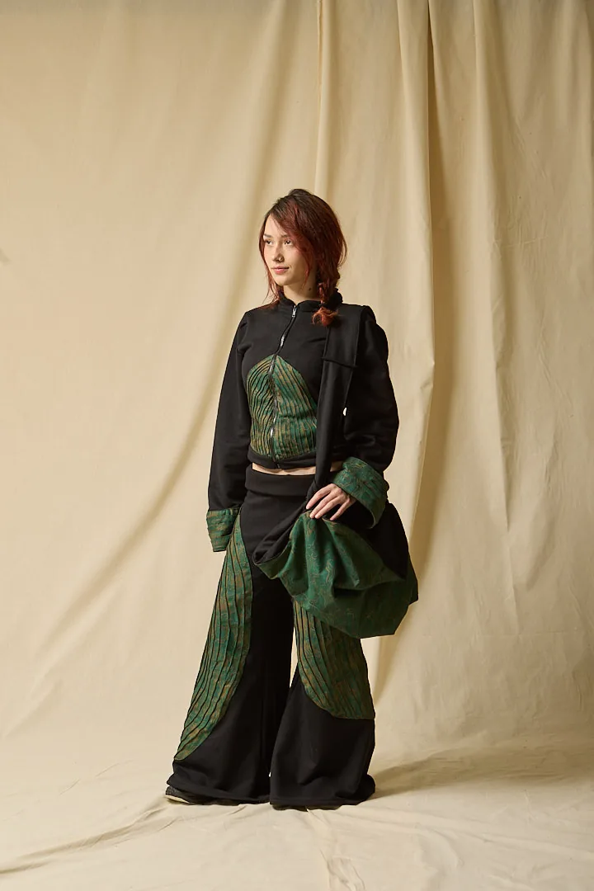
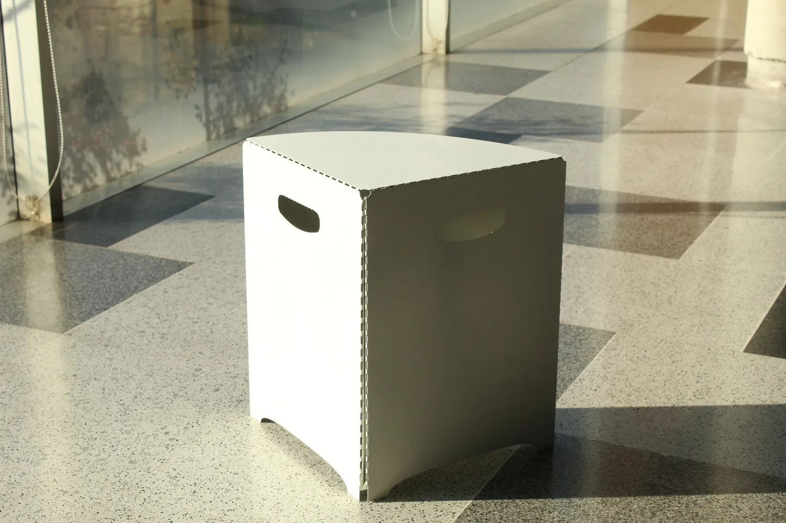
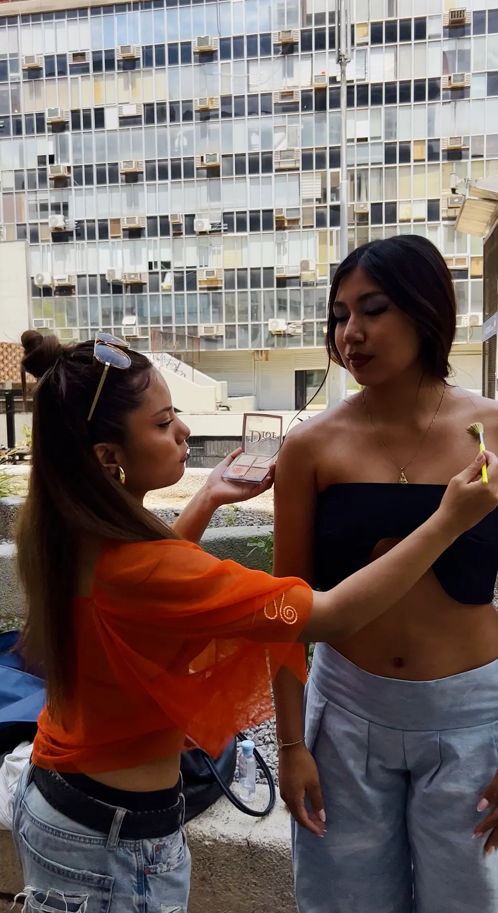
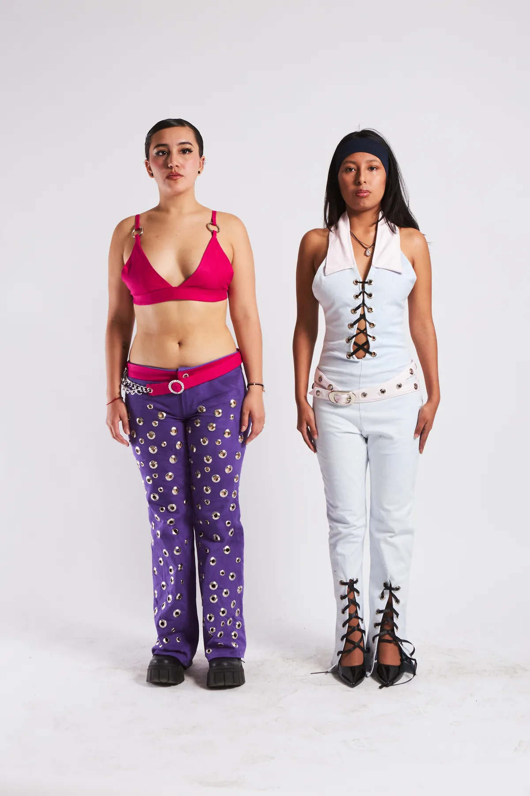

PORTAFOLIO EDITORIAL · EDICIÓN 01
NOELIALANDABURU
Moda · styling · dirección de arte · makeup✳
MODA · IMAGEN · CULTURA VISUAL

IMAGEN 01RETRATO EDITORIAL
01 / SELECTED WORKS
Selected
Works.
Un archivo visual de moda, imagen y exploración. Selecciona una tarjeta para abrir la ficha completa del proyecto.
Gestos
Ejercicio del curso E01 presentado bajo el título Gestos.
ABRIR PROYECTO
02Dos realidades
Una cámara, dos lecturas: detección de manos y análisis de movimiento transforman la escena en visualizaciones distintas.
ABRIR PROYECTOEscuchar la imagen
Experiencia audiovisual que traduce la luz y los cambios de imagen en zonas, notas y sonido.
ABRIR PROYECTOTocar la imagen
Ejercicio del curso E04 presentado bajo el título Tocar la imagen.
ABRIR PROYECTO
Darwinii
Chaqueta de paños de lana reciclados en tonos verdes y cafés, con frunces y relieves inspirados en la Rana de Darwin.
ABRIR PROYECTO
Fricción
Conjunto que cruza estética andina y cultura urbana con contrastes de denim índigo, gabardina negra, pliegues y volúmenes.
ABRIR PROYECTO
Gold Saturción
Proyecto de moda documentado con un panel de colección y una captura de su presentación digital.
ABRIR PROYECTO
Iraca
Conjunto de tres piezas streetwear inspirado en la palma de iraca, con franela negra, gabardina oliva y estampados propios.
ABRIR PROYECTO
P-V9
Proyecto de moda presentado mediante fotografías y una secuencia de láminas del proyecto.
ABRIR PROYECTO
Styling / arte / makeup
Selección de imágenes de trabajos vinculados a styling, dirección de arte y makeup.
ABRIR PROYECTO
Starstruck
Proyecto de moda acompañado por imágenes de su lookbook.
ABRIR PROYECTO02 / ABOUT · ARTIST STATEMENT
About
me.
Soy Noelia Landaburu, estudiante de cuarto año de Diseño de Moda en la Universidad Diego Portales, en Santiago de Chile.
Práctica
Mi práctica creativa se desarrolla entre la moda, el styling, la dirección de arte y la experimentación visual. He trabajado como stylist y directora de arte en sesiones fotográficas y videoclips, además de desarrollar proyectos de diseño y creación de prendas y objetos.
Intereses
Me interesa explorar lo no convencional y desarrollar propuestas que se alejen de lo preestablecido.
Lenguaje visual
Busco construir una identidad visual marcada, donde el color, las texturas, las formas y los detalles tengan un papel fundamental.
Mirada
Entiendo el diseño como una oportunidad para transformar lo que me rodea en propuestas visuales propias. No busco encajar en una estética determinada: experimento, cuestiono y construyo un lenguaje creativo que refleja mi manera de observar y entender el mundo.
03 / CONTACTO
Let’s
create.
¿Tienes una idea o proyecto en mente? Escríbeme a noelia.landaburu@mail.udp.cl.
Pulsa el botón para copiar mi correo.